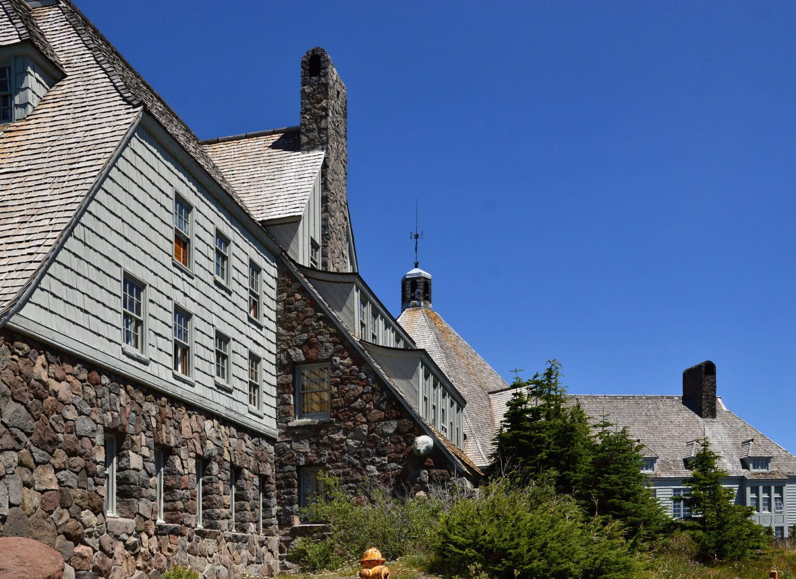

02 / 07
Northwest Oregon has too often been
overlooked
.
Communities across our region have been treated as
uncompetitive
, leaving voters with fewer resources,
less engagement, and fewer opportunities to build lasting political momentum.